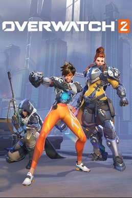
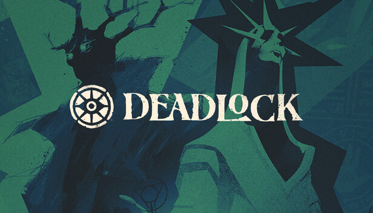
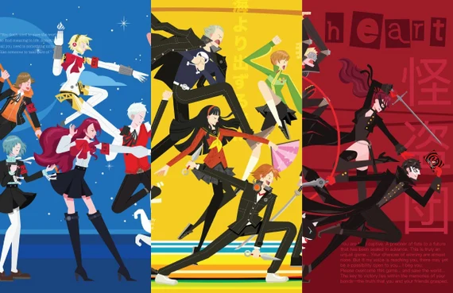

-
overwatch

-
deadlock

-
The Persona series

I am partially biased toward shooters, but JRPGs are one of my favorites too.




I am partially biased toward shooters, but JRPGs are one of my favorites too.